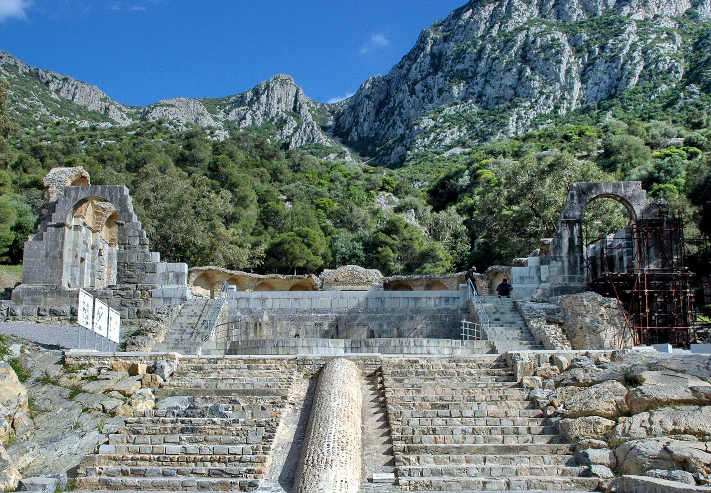
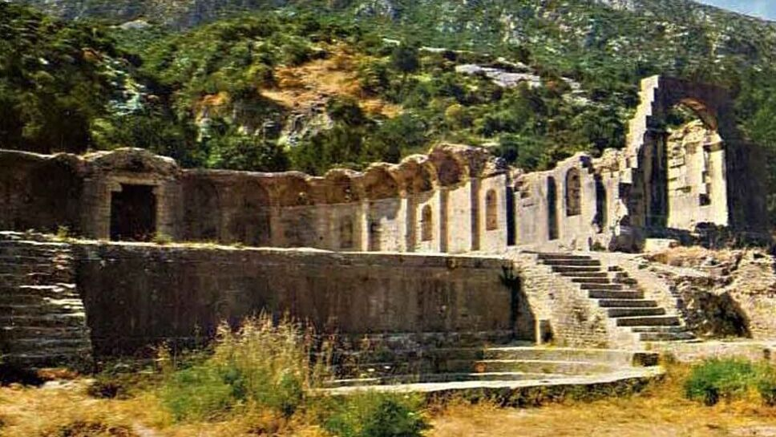
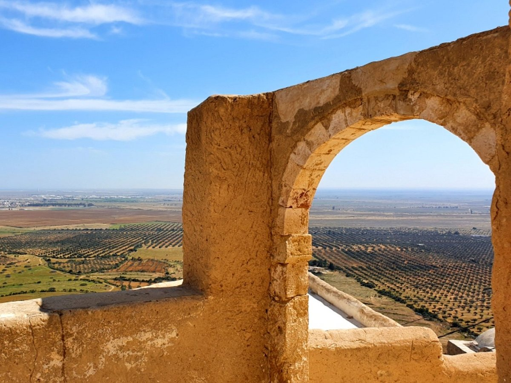
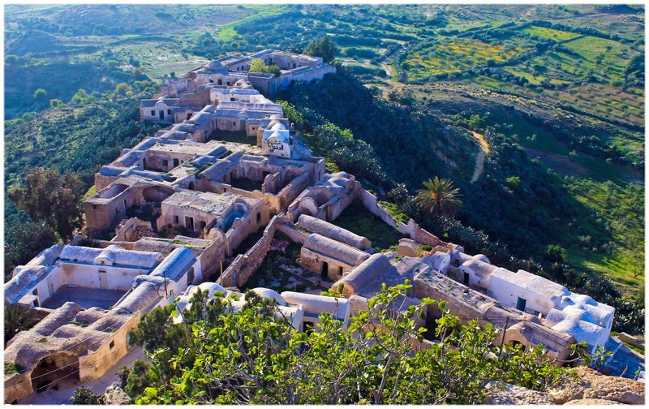
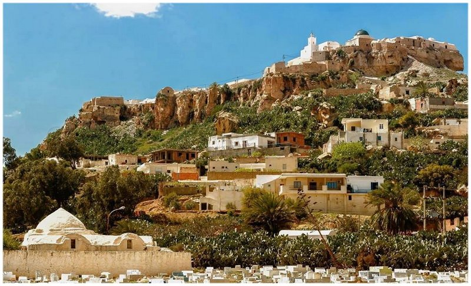

Zaghouan
Montagnes et sources - l'oasis d'histoire et de nature
À propos de Zaghouan
Zaghouan est un gouvernorat et une ville situés dans le nord-est de la Tunisie, réputés pour leurs montagnes, leurs sources d'eau et leur patrimoine romain lié à l'aqueduc de Tunis. C'est une région parfaite pour les amateurs de randonnée et d'histoire.
Emplacement
Zaghouan se trouve à environ 60 kilomètres au sud-ouest de Tunis, au pied du massif du même nom (Djebel Zaghouan). La région offre des paysages montagneux, des forêts et des sources naturelles.
Histoire
La localité est célèbre pour le Temple des Eaux (Nymphaeum) et pour son rôle historique dans l'approvisionnement en eau de la ville de Tunis via un ancien aqueduc romain. Zaghouan a aussi été un point stratégique à travers les époques, et conserve des traces d'occupations antiques et médiévales.
Caractéristiques
- Les Sources : De nombreuses sources naturelles alimentent la région; elles ont servi depuis l'Antiquité.
- Randonnée et Nature : Djebel Zaghouan propose des sentiers pour randonneurs et des panoramas remarquables.
- Patrimoine Romain : Vestiges d'ouvrages hydrauliques et sites historiques à visiter.
- Ambiance Rurale : Villages authentiques et agriculture locale, notamment l'olivier et les cultures traditionnelles.
Top Places à Visiter
1. Le Temple des Eaux (Nymphaeum)
Un site antique remarquable associé à l'aqueduc qui alimentait Tunis. C'est l'un des symboles historiques de Zaghouan et une visite incontournable pour comprendre l'ingénierie romaine.
.jpg)


2. Djebel Zaghouan
Montagne emblématique offrant des panoramas sur la région et la mer Méditerranée par temps clair. Sentiers de randonnée adaptés pour une demi-journée ou une journée complète.


3. Takrouna
Un charmant village perché offrant des vues panoramiques sur la région, idéal pour découvrir la culture et les traditions locales



4. Médina de Zaghouan
Promenez-vous dans les rues pavées et découvrez l'atmosphère authentique de cette médina andalouse, connue pour ses portes en bois sculpté, ses artisans locaux et sa spécialité culinaire.


- Restaurant Local : Cuisine traditionnelle, souvent axée sur les produits de la ferme et les plats régionaux.
- Auberge de la Montagne : Ambiance conviviale et plats faits maison, idéale après une randonnée.
- Le Coin du Terroir : Petit restaurant proposant des spécialités locales et des produits du terroir.
- Café du Marché : Un endroit simple et chaleureux pour un café ou un thé à la menthe.
- Terrasse Panoramique : Café offrant une belle vue sur la vallée et les montagnes.